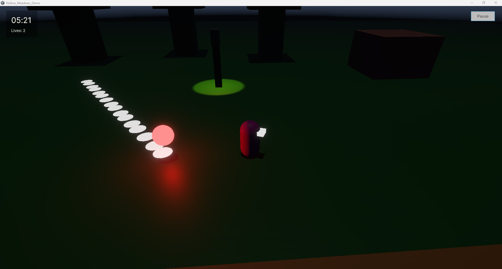
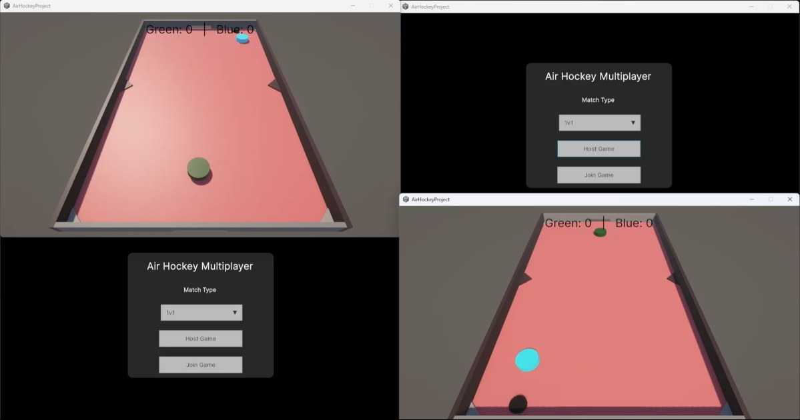
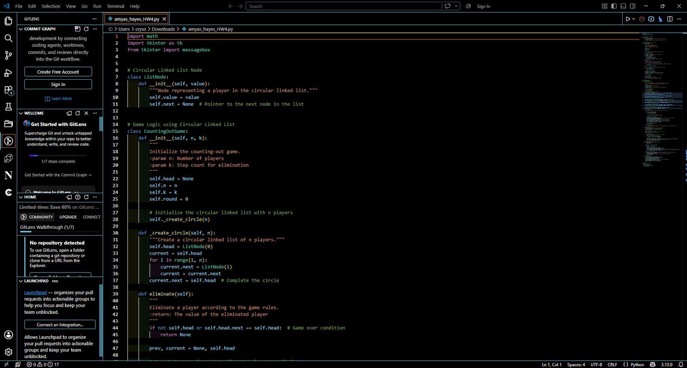
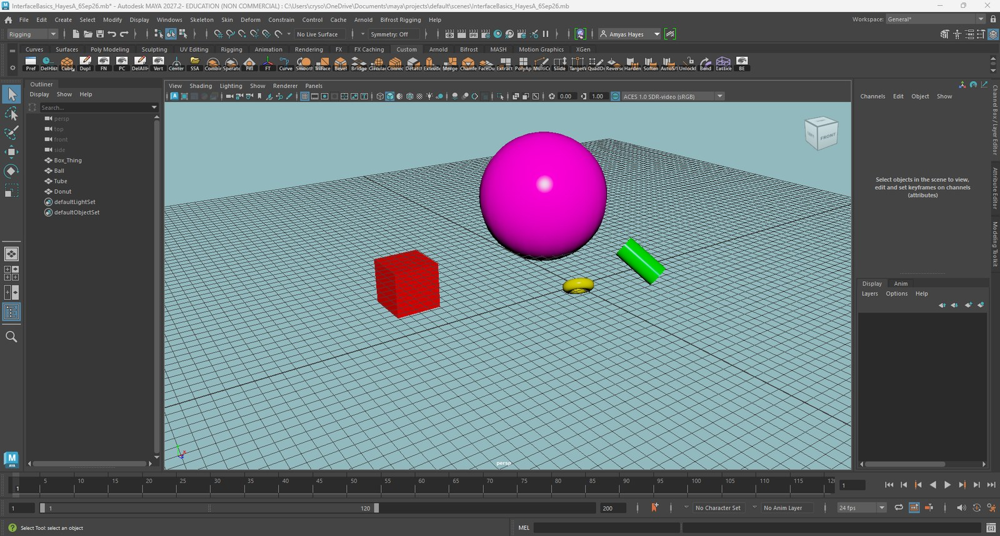

PROJECT 01
Hollow Meadows Prototype
A Unity survival-horror prototype where I worked on gameplay systems, enemy behavior, atmosphere, lighting, and survival mechanics.
Unity / C# / Game DesignComputer Science / Game Design & Development
I'm Amyas Hayes, a Computer Science student with a Game Design and Development minor. I like learning how systems work, figuring out why game mechanics feel the way they do, and turning ideas into something playable or useful.
View selected work ↓Student • Programmer • Game Developer
My interest in technology started when I was younger. My granddad worked with technology, and we spent time refurbishing laptops and computers together. That eventually pushed me toward programming and Computer Science.
I am especially interested in game mechanics and the systems behind games. My long-term goal is to help create a game with a team or build one of my own. If I am not working directly in games, I still want to use programming to create useful software.
02 / Selected Work
A few examples of the programming, game development, and 3D work I have been building through school.

PROJECT 01
A Unity survival-horror prototype where I worked on gameplay systems, enemy behavior, atmosphere, lighting, and survival mechanics.
Unity / C# / Game Design
PROJECT 02
A Unity air hockey project with multiplayer setup, teams, scoring, and networked gameplay.
Unity / Networking / C#
PROJECT 03
Programming assignments using linked lists and trees to practice problem solving, recursion, and program organization.
Python / Data Structures
PROJECT 04
Early Autodesk Maya practice using geometry, materials, polygon editing, and other modeling tools while learning the 3D workflow.
Maya / 3D ModelingVIDEO DEMO
A short look at an earlier version of the horror prototype.
I like looking at why mechanics work and how systems interact to make a game feel satisfying.
Programming gives me a way to turn an idea into something functional that I can actually test.
The Final Fantasy XIII trilogy is one of my biggest inspirations, especially its characters, world, and visual design.
I am currently learning Autodesk Maya and building my modeling skills from the basics.
04 / Contact
You can reach me by email or view more of my academic and professional work through the links below.